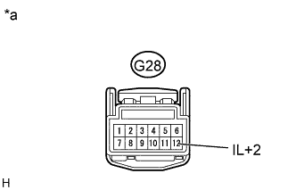
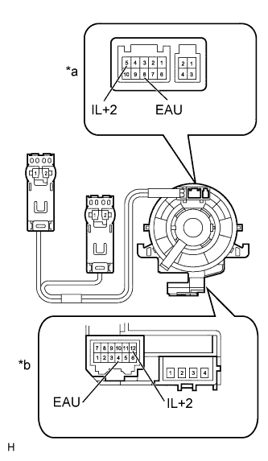
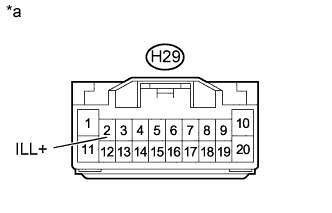

AUDIO AND VISUAL SYSTEM (w/o Multi-display) > Illumination Circuit |
| 1.CHECK ILLUMINATION |
Check if the illumination for the radio receiver assembly, steering pad switch, glove box or other parts (hazard switch, transmission control switch, etc.) come on when the light control switch is turned to the HEAD or TAIL position.
| Result | Proceed to |
| Illumination comes on for all components except steering pad switch. | A |
| Illumination comes on for all components except radio receiver assembly. | B |
| No illumination comes on (radio receiver, hazard switch, glove box, etc.). | C |
| Illumination comes on for all components except steering pad switch and radio receiver assembly. | D |
|
| ||||
|
| ||||
|
| ||||
| A | |
| 2.CHECK HARNESS AND CONNECTOR (SPIRAL WITH SENSOR CABLE - BATTERY) |
|  |
Disconnect the G28 spiral with sensor cable sub-assembly connector.
Measure the voltage according to the value(s) in the table below.
| Tester Connection | Switch Condition | Specified Condition |
| G28-12 (IL+2) - Body ground | Light control switch TAIL or HEAD | 11 to 14 V |
| *a | Front view of wire harness connector (to Spiral with Sensor Cable Sub-assembly) |
|
| ||||
| OK | |
| 3.INSPECT STEERING PAD SWITCH ASSEMBLY |
Remove the steering pad switch assembly (Click here).
Connect the positive (+) lead of the battery to terminal 5 (IL+2) and the negative (-) lead of the battery to terminal 8 (EAU) of the steering pad switch assembly connector.
Check if the illumination for the steering pad switch assembly comes on.
|
| ||||
| OK | |
| 4.INSPECT SPIRAL WITH SENSOR CABLE SUB-ASSEMBLY |
|  |
Remove the spiral with sensor cable sub-assembly (Click here).
Measure the resistance according to the value(s) in the table below.
| Tester Connection | Condition | Specified Condition |
| 8 (EAU) - 4 (EAU) | Spiral with sensor cable is turned 2.5 rotations counterclockwise | Below 1 Ω |
| Spiral with sensor cable is centered | ||
| Spiral with sensor cable is turned 2.5 rotations clockwise | ||
| 5 (IL+2) - 12 (IL+2) | Spiral with sensor cable is turned 2.5 rotations counterclockwise | |
| Spiral with sensor cable is centered | ||
| Spiral with sensor cable is turned 2.5 rotations clockwise |
| *a | Steering Pad Switch Assembly Side |
| *b | Vehicle Side |
|
| ||||
| OK | |
| 5.CHECK HARNESS AND CONNECTOR (RADIO RECEIVER - SPIRAL WITH SENSOR CABLE) |
Disconnect the H30 radio receiver assembly connector.
Disconnect the G28 spiral with sensor cable sub-assembly connector.
Measure the resistance according to the value(s) in the table below.
| Tester Connection | Condition | Specified Condition |
| H30-6 (SWG) - G28-4 (EAU) | Always | Below 1 Ω |
| H30-6 (SWG) - Body ground | Always | 10 kΩ or higher |
|
| ||||
| OK | ||
| ||
| 6.CHECK HARNESS AND CONNECTOR (RADIO RECEIVER - BATTERY) |
|  |
Disconnect the H29 radio receiver assembly connector.
Measure the voltage according to the value(s) in the table below.
| Tester Connection | Switch Condition | Specified Condition |
| H29-2 (ILL+) - Body ground | Light control switch TAIL or HEAD | 11 to 14 V |
| *a | Front view of wire harness connector (to Radio Receiver Assembly) |
|
| ||||
| OK | ||
| ||
| 7.CHECK HARNESS AND CONNECTOR (RADIO RECEIVER - COMBINATION METER) |
Disconnect the H29 radio receiver assembly connector.
Disconnect the G3 combination meter assembly connector.
Measure the resistance according to the value(s) in the table below.
| Tester Connection | Condition | Specified Condition |
| H29-12 (ILL-) - G3-3 (ILL-) | Always | Below 1 Ω |
| H29-12 (ILL-) - Body ground | Always | 10 kΩ or higher |
|
| ||||
| OK | ||
| ||